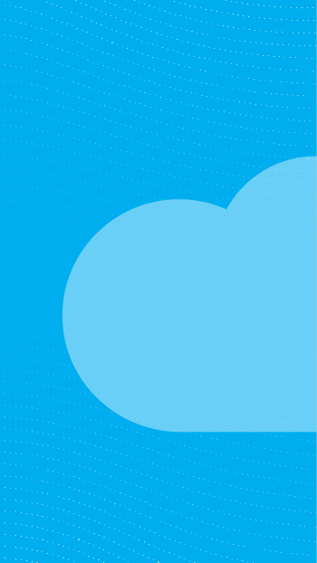
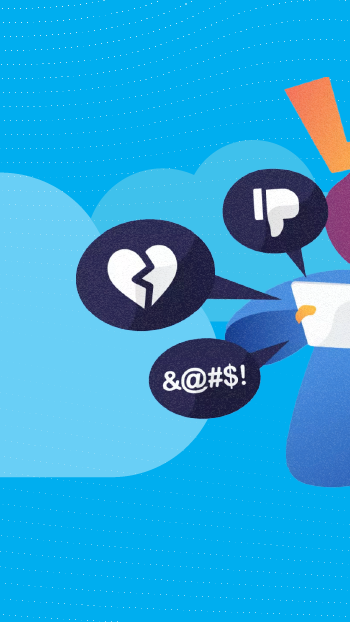
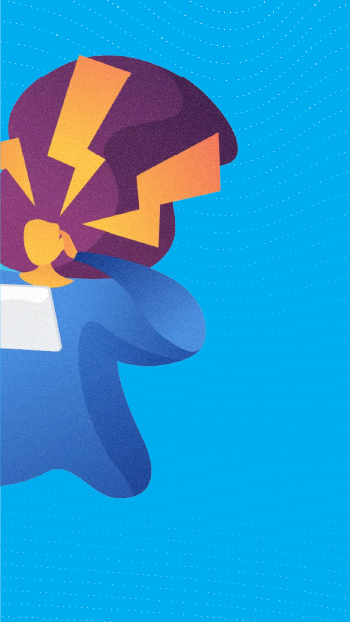
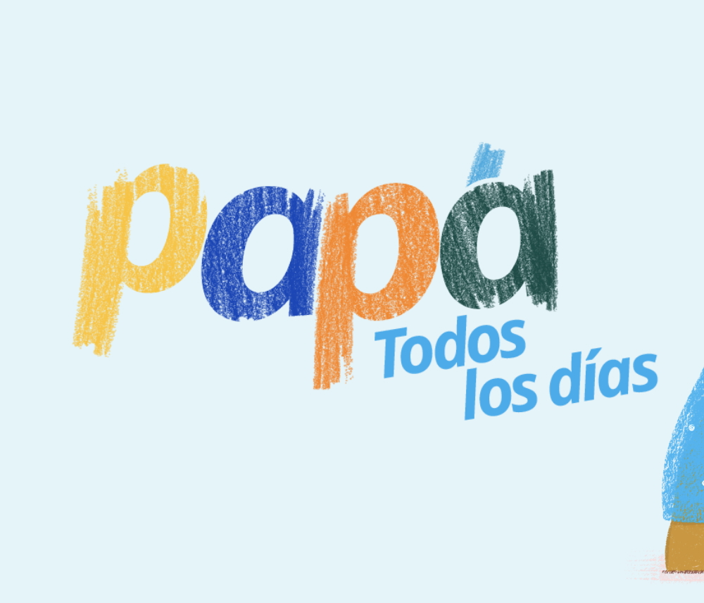
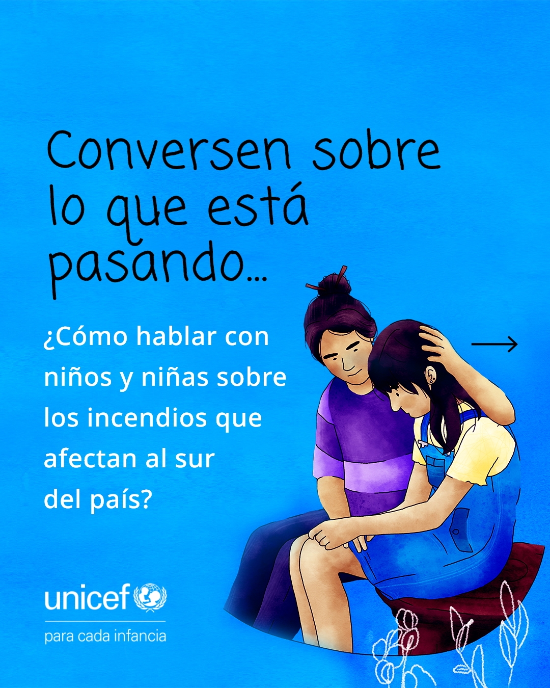

Creación de contenido
Producción de mensajes para múltiples plataformas
Adapto información y mensajes clave para una organización sobre temas complejos en contenido atractivo y ajustado a particularidades de una determinada audiencia.
Ejemplo 1
Adaptación de campaña a diversos formatos

Construcción de relato verbal y audiovisual.

Adaptación de información compleja a guías descargables.

Optimización de contenido para generar leads
Ejemplo 2
Contenido destacado

Narración verbal y audiovisual para landing.

Contenido diverso para Instagram

Contenido para email marketing realizado en Mailchimp y Mailjet
Relevancia para Ruuf: Tengo la versatilidad para abordar múltiples formatos y plataformas a través de campañas, contenido always-on y abogacía sobre tópicos de interés.
Resultados destacados:
7M+ alcance máximo
Producción gráfica y audiovisual multiplataforma